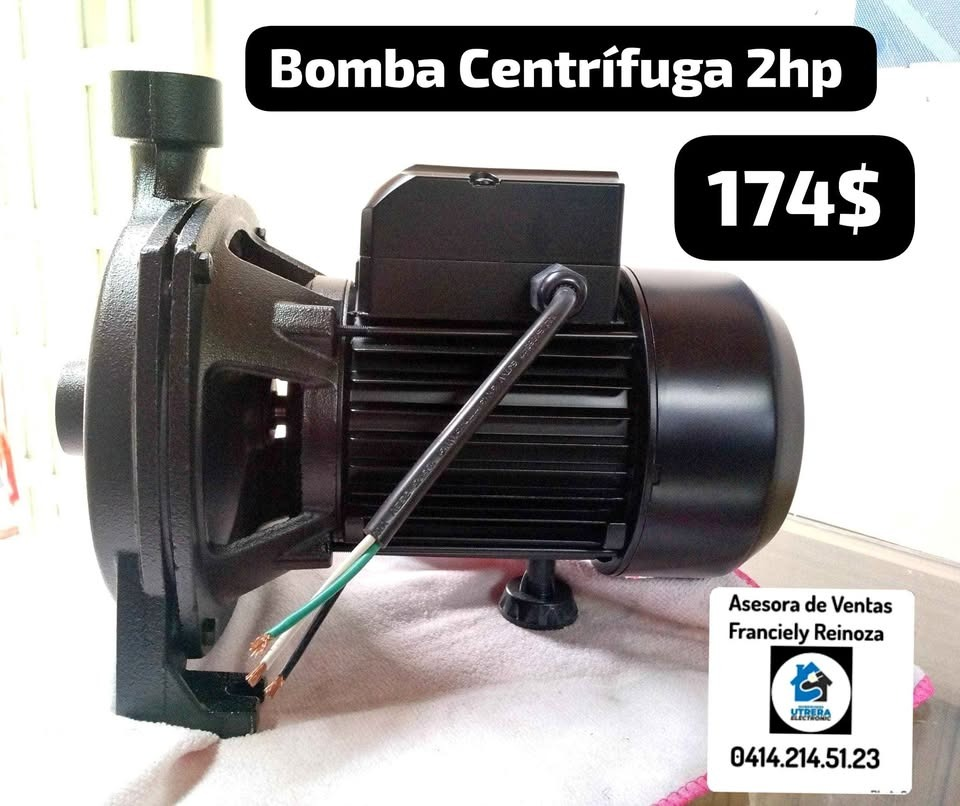
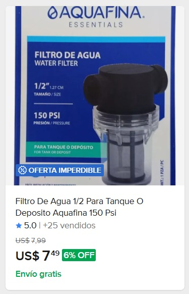
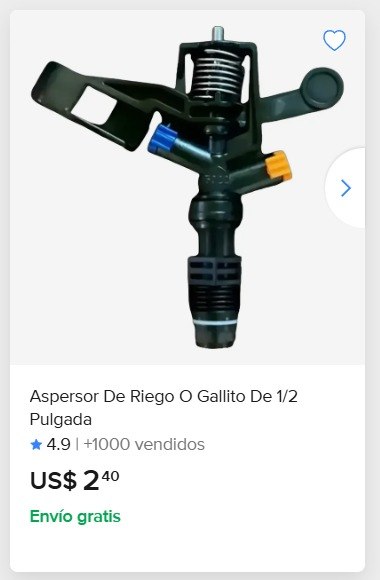
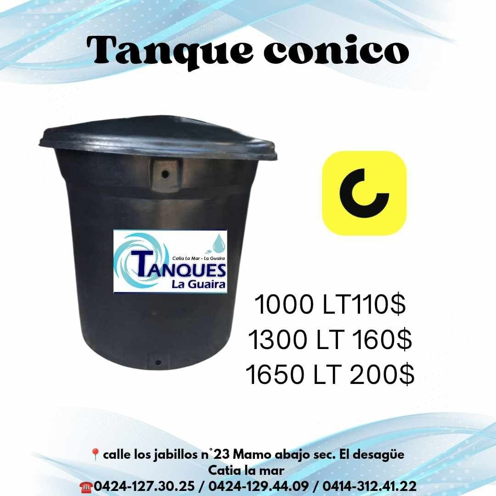
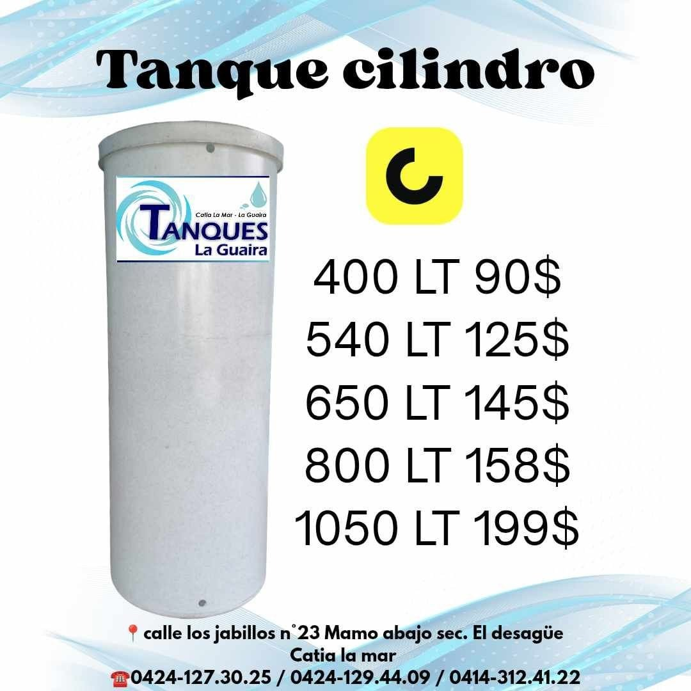

Lo que hace falta para poder decidir
Estas preguntas están abiertas y bloquean todo lo demás: sin ellas no se puede cerrar ni el presupuesto ni el diseño del riego. Las respuestas salen del terreno, en Venezuela.
⚠ Antes de plantar en firme: verificar la quebrada. La parcela es la misma que se estudió para la granja de pollos, y allí quedó levantado el riesgo de cauce / abanico de quebrada. Un huerto en el paso de una quebrada se pierde entero igual que un galpón. Esta verificación se hace en el sitio, no en el papel.
Precios
Esta tabla se lee directamente de la hoja de cálculo que mantiene el socio en Venezuela. Si él cambia un precio en la hoja, aquí aparece actualizado al recargar la página.
📊 Abrir la hoja de precios para editarla
⏳ La hoja de precios aún no está conectada a esta página. En cuanto se conecte, aquí aparece el botón para abrirla y editarla.Estos son precios observados, no cotizaciones en firme. No incluyen flete a la parcela ni instalación, y en Venezuela cambian rápido. Antes de comprar hay que confirmar disponibilidad, garantía y precio puesto en Naiguatá.
Hallazgo de compra: los tanques cónicos rinden casi el doble
Calculadora de presupuesto
Mueve los números y el total se recalcula con los precios que estén en la hoja en este momento. Sirve para ver el orden de magnitud y para comparar escenarios, no como cotización.
Proyección de crecimiento y cosecha
Cuánto tarda el huerto en producir, cuántos kilos daría cada planta año por año, y cuándo se recupera lo invertido. Los kilos salen de datos comerciales de México (el mayor productor de limón persa); el precio de venta y la inversión salen de la hoja de precios.
Esto es una proyección, no una promesa. Las cifras vienen de huertas comerciales mexicanas bien manejadas y con agua buena. En Naiguatá todavía no sabemos la calidad del agua ni la salinidad, y ambas pueden bajar el rendimiento de forma importante. Sirve para decidir el orden de magnitud y comparar escenarios — no para comprometer dinero sin hablar antes con un agrónomo o un vivero local.
Kilos por año
Año por año
De dónde salen estos números
La curva de producción
El árbol entra en producción después del segundo año y alcanza su máximo entre el sexto y el séptimo: 25 % del máximo en el año 3, 30 % en el 4, 50 % en el 5 y 100 % entre el 6 y el 7. El valor del año 6 (80 %) es una interpolación nuestra entre el 50 % del año 5 y el 100 % del 7.
Los kilos por árbol
A los 7 años, huertas mexicanas de alta densidad dan 50 a 56 kg por árbol (666 a 1000 árboles/ha). En huertas maduras de 11 años a menor densidad (4×6 m, 417 árboles/ha) se han medido 140 a 215 kg por árbol según el patrón, con muy buen manejo. Un valor máximo comúnmente citado es 32 kg, y un árbol bien cuidado puede pasar de 100 kg.
Por eso los tres escenarios: la horquilla real es enorme y depende del patrón, la densidad, el agua y el manejo.
Por hectárea, para comparar
Sistema convencional (357 árboles/ha): 18 a 25 toneladas/ha. Alta densidad: 38 a 50 toneladas/ha. Sirve para contrastar si el número que da esta proyección es razonable o está fuera de rango.
Lo que esta proyección NO incluye
- El efecto de la salinidad del agua de la costa — desconocido y potencialmente grave.
- Pérdidas por plagas o enfermedades (HLB, Phytophthora).
- Variación de precio entre temporada alta y baja.
- El costo del dinero inmovilizado durante los años sin ingreso.
La parcela
Es la misma parcela que se estudió para la granja de ponedoras, así que toda la verificación de sitio de aquel proyecto aplica igual aquí. No se vuelve a derivar: se ejecuta.
Lo que hay que verificar en el sitio
- Riesgo de quebrada / inundación — cauce y abanico de deslave. Es lo primero y lo más grave.
- Distancia real al mar y salinidad — gobierna la elección del patrón y si el agua sirve para regar.
- Drenaje del terreno — los cítricos odian el encharcamiento (pudrición de raíz por Phytophthora). Si drena mal, hay que plantar en camellón o lomo.
Clima de la costa (ya caracterizado)
- Costa caliente, húmeda (~70–85 %) y salina.
- El sol fuerte es bueno para el cítrico — aquí el problema se invierte respecto a las gallinas, que sufrían con el calor.
- Lo que manda el éxito es la calidad del agua y el drenaje, no la temperatura.
Plantación
Marco y densidad
El limón persa suele ir a 5–6 m entre plantas en huerto tradicional, o 3–4 m en plantación densa con manejo intensivo. Con el número de plantas y el área real se cierra el layout definitivo.
La calculadora de arriba muestra el área que haría falta según el marco que elijas.
Patrón e injerto
Hay que consultar con un vivero o agrónomo local qué patrón tolerante a salinidad se consigue en la zona. En costa salina el patrón es la decisión técnica más importante de todo el proyecto — más que la variedad.
Hoyo de siembra y suelo
Tamaño del hoyo, enmienda de suelo y si se planta en camellón se deciden según el drenaje real medido en la parcela.
Poda de formación
Los primeros años se hace poda de formación para armar la copa y facilitar la cosecha después.
Riego — el equipo que ya tenemos cotizado
Fotos de proveedor recibidas el 22/07/2026. Los precios de cada equipo están en la tabla de precios de arriba y se actualizan desde la hoja.





Lo que falta dimensionar
- Litros por planta y día según edad del árbol y clima → define el volumen de tanque, el caudal de la bomba y cuántos goteros.
- Si la bomba de 2 HP sobra. Para un huerto pequeño puede ser bastante más de lo necesario — y una bomba sobredimensionada gasta corriente de más toda la vida del proyecto.
- Calidad del agua (pH, salinidad, cloruros). Bloquea la decisión de goteo vs aspersión y la del patrón.
El filtro no es opcional
Si vamos a goteo, el filtro va antes de los goteros sí o sí: se tapan con sedimento y se pierde la línea. A $7,49 es la pieza más barata del sistema y la que más problemas evita. Ya tenemos uno de ½" cotizado.
Bombeo cuesta arriba y riego por gravedad
La idea es subir el agua una vez con la bomba hasta un tanque alto, y de ahí regar por gravedad, sin bomba. Es un buen esquema: la bomba trabaja poco y a horas convenientes, y el riego funciona aunque no haya luz — algo importante en Venezuela.
1 · ¿Qué bomba hace falta para subir el agua?
2 · ¿Cuánta presión da la gravedad?
La presión que consigues por gravedad depende solo de la altura del tanque sobre las plantas — no del tamaño del tanque. Cada metro de altura da 0,098 bar (1,42 psi).
Ideas para el riego por gravedad
El tanque alto es el corazón del sistema
- Súbelo lo que puedas. La altura es gratis después de construirla, y es lo único que te da presión. Si el terreno tiene una loma, aprovéchala antes que construir una torre.
- Salida por el fondo, con el filtro justo después.
- Deja un dedo de fondo muerto: pon la toma unos centímetros por encima del fondo para que el sedimento no se vaya a los goteros.
- Tápalo. A la luz crecen algas, y las algas tapan goteros.
- Flotador en la entrada para que la bomba no lo desborde.
Goteo, no aspersión
Con gravedad, el goteo es casi la única opción sensata: los aspersores necesitan bastante más presión de la que da un tanque a altura razonable. Y en cítrico el goteo gana igual — menos agua, no moja la hoja (menos hongos), y lleva el agua a la raíz.
La calculadora de arriba te dice exactamente qué emisores aguanta tu altura.
Sectores por turnos
Con poca presión no intentes regar todo a la vez. Divide el huerto en sectores y riega uno cada vez con una llave: cada sector recibe toda la presión y el caudal disponibles. Es más lento pero funciona; regar todo junto no funciona.
Que las líneas vayan a nivel
Si una línea de goteo baja por una pendiente, los goteros de abajo botan más agua que los de arriba. Traza las líneas siguiendo la curva de nivel (a la misma altura), y baja de nivel con la tubería principal. Si el desnivel dentro de una línea es grande, hacen falta goteros autocompensados, que dan lo mismo a distinta presión.
El filtro no es opcional
Con gravedad hay poca presión para arrastrar suciedad, así que un gotero tapado se queda tapado. Filtro siempre, y límpialo seguido. Pon además un lavado de punta: deja el final de cada línea con un tapón que puedas abrir para purgar el sedimento.
Bombea cuando convenga, riega cuando toque
Separar el bombeo del riego es la gran ventaja de este esquema. Puedes subir el agua cuando hay luz o cuando el pozo rinde, y regar de madrugada o al atardecer, que es cuando menos se evapora — sin depender de que haya electricidad en ese momento.
¿Qué hay que agregarle al agua?
Antes de agregar nada: el análisis de agua. Sin saber el pH, la salinidad (conductividad eléctrica) y los cloruros, cualquier receta es a ciegas y puede hacer daño. Es la misma pregunta abierta que bloquea la elección del patrón. Primero se mide, después se corrige.
1 · Fertilizante (fertirriego)
Es lo principal que se le echa al agua. Aprovecha la instalación de goteo para repartir el abono disuelto, poco a poco y justo en la raíz — mucho más eficiente que tirarlo al suelo.
- Nitrógeno, fósforo y potasio (NPK) — el potasio pesa más cuando el árbol está cargando fruta.
- Calcio y magnesio según lo que ya traiga el agua y el suelo.
- Micronutrientes — el cítrico es muy propenso a faltarle zinc, hierro y manganeso, sobre todo en suelos alcalinos. Se ve en las hojas jóvenes, amarillas entre las nervaduras.
Las dosis salen del análisis de agua y de suelo más la edad del árbol. No las inventamos aquí.
2 · Corrección del pH
Si el agua es alcalina (pH alto), pasan dos cosas malas: el árbol absorbe peor el hierro y el zinc, y se forman incrustaciones de cal que tapan los goteros desde dentro.
Se corrige inyectando un ácido en el riego. Cuál y cuánto depende del análisis — no es algo para probar a ojo.
3 · Mantener los goteros limpios
En goteo, la obturación es la avería típica. Se previene con dos tratamientos periódicos, nunca a la vez:
- Lavado ácido para disolver la cal.
- Cloro para algas y limos biológicos.
⚠ Nunca mezcles cloro y ácido. Juntos liberan gas cloro, que es tóxico. Se aplican en riegos distintos, con enjuague de por medio.
4 · Si el agua sale salina
Este es el riesgo real de la costa, y conviene decirlo claro: no hay nada que echarle al agua para quitarle la sal. Lo que se hace es otra cosa:
- Regar de más a propósito (fracción de lavado): dar algo más de agua de la que consume el árbol, para arrastrar la sal por debajo de las raíces. Con goteo funciona bien, pero exige que el suelo drene.
- Elegir un patrón tolerante a la salinidad — decisión que se toma antes de comprar la planta, no después.
- En suelos sódicos se usa yeso agrícola, pero eso corrige el suelo, no el agua.
Por eso el análisis de agua es lo primero: si sale muy salina, cambia el patrón, el diseño del riego y hasta la viabilidad.
Sanidad
No fumigar a ciegas. Antes de cualquier tratamiento hay que verificar con un agrónomo local qué presión de plagas hay realmente en la zona.
Lo que hay que vigilar
- Minador de la hoja — típico en cítrico joven.
- Ácaros.
- Phytophthora (raíz y pie) — ligada al mal drenaje y al encharcamiento.
- HLB / greening — grave en cítricos. Hay que verificar la presión local; condiciona si el proyecto es viable a largo plazo.
Nutrición
Cuando el riego esté montado se arma un programa de fertilización por fertirriego (abono disuelto en el agua de goteo), que es más eficiente que abonar al suelo y aprovecha la instalación que ya se pagó.
Negocio
El horizonte es largo
Primera fruta alrededor de los 2–3 años; plena producción a los 4–5. Durante todo ese tiempo hay gasto de agua, energía, abono y mano de obra sin ingreso. Es la diferencia grande contra el proyecto de pollos, que daba vuelta en semanas.
Lo que falta averiguar en el mercado
- Precio del limón persa al productor en la zona — está en la hoja como dato pendiente.
- Canal de venta: mercado, intermediario o directo. Cambia el precio y el esfuerzo de venta.
Con esos dos datos se arma el modelo económico completo: inversión inicial, gasto anual y curva de producción hasta plena cosecha.
Decisiones ya tomadas
D-001 · El cultivo es limón persa
Se siembra limón persa (lima Tahití, Citrus × latifolia): cultivo comercial común en Venezuela, tolerante al calor costero, fruto sin semilla y de demanda estable. El material de la granja de ponedoras queda archivado; esta parcela pasa a huerto.
D-002 · Misma parcela — la verificación de sitio se hereda
La parcela es la misma del proyecto de pollos (10°36'52,4"N 66°44'03,8"W). Por tanto la verificación de sitio de aquel proyecto — riesgo de quebrada, elevación, distancia al mar y drenaje — aplica igual aquí y hay que ejecutarla antes de plantar en firme.
Cómo actualizar los precios
Para el socio en Venezuela. No hace falta instalar nada ni saber de programación: se edita una hoja de cálculo normal, desde el teléfono.
¿Todavía no existe la hoja? Descarga la plantilla ya formateada (cabecera de colores, desplegables, filtros y el costo por litro calculado solo) y súbela a Google Drive:
Sin internet no se pierde nada. La app de Google Sheets guarda los cambios en el teléfono y los sube cuando vuelve la señal. Y esta página recuerda los últimos precios que cargó, así que sigue mostrando algo aunque estés sin datos.
Si te equivocas, no pasa nada. El Google Sheet guarda todo el historial de cambios (Archivo → Historial de versiones), así que cualquier error se puede devolver.